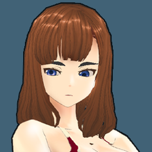
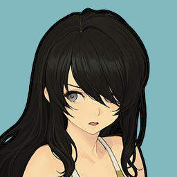
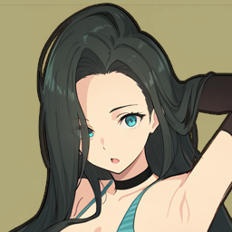
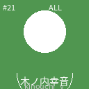

1
天頂プロレス
S主力
白銀麗子 77
看板
阿武隈塔子 80
主力
菊池璃子 74
評価
193pt
平均OVR 68
対戦pt 0
対戦pt 0


業界首位に立つ団体で、追われる側としての安定感がある。阿武隈塔子が最高OVR80の看板を背負う一方、王座はまだ空いている。看板を中心に上位陣がまとまり、主力の顔ぶれで勝負できる陣容で、トップ3平均OVR77、全体平均OVR68。所属16名の中に70台以上が10名、80台以上が1名おり、人気75の土台をどこまで戦力に変えられるかが見どころ。
阿武隈塔子が団体の顔。白銀麗子、菊池璃子が続くため、看板頼みで終わらせず層として押し上げたい。
 77
主力
77
主力
74 主力73 主力72 主力72 72
72この列は大枠の王者/看板を起点に、実際に比較したい主力層を並べたもの。大枠込み8名の見える範囲はOVR80から72までで、看板の後ろに白銀麗子が続き、上位のつながりは悪くない。主力候補が多く、控えにも試合を任せやすい。
首位まで37pt差。射程圏にはいるが、もう一段の厚みが欲しい。梅ヶ丘みのりが最高OVR77の看板を背負う一方、王座はまだ空いている。突出した怪物はいないが、主力候補が広く並ぶ堅実な陣容で、トップ3平均OVR74、全体平均OVR58。所属13名の中に70台以上が3名、80台以上が0名おり、人気55の土台をどこまで戦力に変えられるかが見どころ。
梅ヶ丘みのりが団体の顔。柳島みずほ、川野辺菜穂子が続くため、看板頼みで終わらせず層として押し上げたい。
 71主力
71主力 67主力
67主力 64
64
63この列は大枠の王者/看板を起点に、実際に比較したい主力層を並べたもの。大枠込み6名の見える範囲はOVR77から63までで、看板の後ろに柳島みずほが続き、上位のつながりは悪くない。上位陣はそろっているが、控えの底上げでさらに安定する。
首位まで65pt、直上まで28pt差。順位を上げるには看板の後ろを支える層作りが鍵になる。長谷川レオナが最高OVR75の看板を背負う一方、王座はまだ空いている。まだ発展途上だが、伸びしろのある選手を育てながら順位を追う陣容で、トップ3平均OVR69、全体平均OVR58。所属10名の中に70台以上が1名、80台以上が0名おり、人気35の土台をどこまで戦力に変えられるかが見どころ。
長谷川レオナが団体の顔。松下真理亜、岩小路志摩子が続くため、看板頼みで終わらせず層として押し上げたい。
 64主力6358
64主力6358この列は大枠の王者/看板を起点に、実際に比較したい主力層を並べたもの。大枠込み5名の見える範囲はOVR75から58までで、看板の後ろに松下真理亜が続き、上位のつながりは悪くない。少数精鋭寄りで、下位選手の成長が順位に直結する。
首位まで136pt、直上まで71pt差。順位を上げるには看板の後ろを支える層作りが鍵になる。木村レイカが最高OVR48の看板を背負う一方、王座はまだ空いている。まだ発展途上だが、伸びしろのある選手を育てながら順位を追う陣容で、トップ3平均OVR43、全体平均OVR39。所属5名の中に70台以上が0名、80台以上が0名おり、人気10の土台をどこまで戦力に変えられるかが見どころ。
木村レイカが団体の顔。戸塚ゆかり、木ノ内幸音が続くため、看板頼みで終わらせず層として押し上げたい。

38主力36この列は大枠の王者/看板を起点に、実際に比較したい主力層を並べたもの。大枠込み4名の見える範囲はOVR48から36までで、看板の後ろに戸塚ゆかりが続き、上位のつながりは悪くない。少数精鋭寄りで、下位選手の成長が順位に直結する。